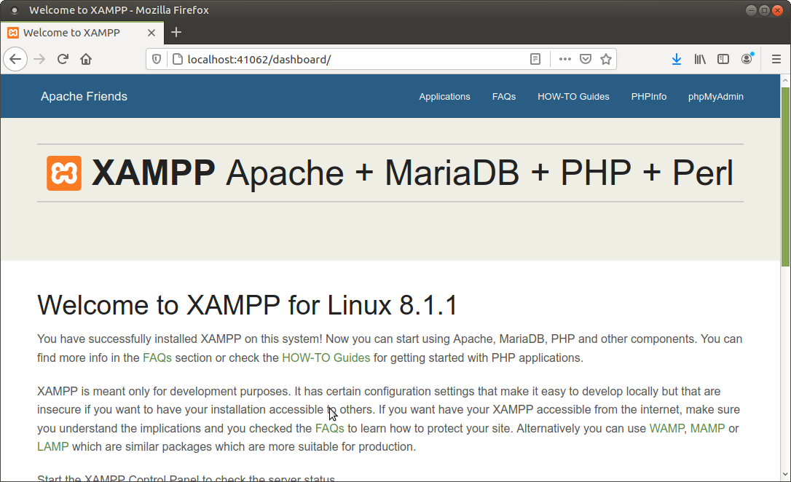

2.2 - Docker
Des de Docker encara se simplifica més, ja que podem utilitzar una imatge amb tot instal·lat: Apache, PHP, MySQL... Però evidentment hem de tenir instal·lat docker.
De fet podem trobar moltes imatges ja creades.
Per exemple podem utilitzar aquesta:
https://hub.docker.com/r/tomsik68/xampp/
En la pàgina tenim les instruccions, però bàsicament serà açò fent-lo des d'una terminal:
- Per a instal·lar-la
docker pull tomsik68/xampp- Per a executar-la
docker run --name myXampp -p 41061:22 -p 41062:80 -d -v ~/www:/www tomsik68/xamppEl que estem fer és crear una instància anomenada myXampp, enllaçant el port 41061 al port 22 de la imatge (per a fer ssh), i el port 46062 al port 80 (per accedir al servidor web). Podríem haver triat uns altres ports, però aquestos poden anar bé per a no interferir (per exemple si ja s'estava utilitzant el port 80 en la màquina real). A més s'ha relacionat el directori www (que s'ha de crear en el home de la màquina real) al directori /www de la imatge que és on s'han de guardar les pàgines.
Una vegada en marxa, accedim al servidor web posant l'adreça i el port 41062. Si accedim des de la mateixa màquina serà per tant:

Llicenciat sota la Llicència Creative Commons Reconeixement NoComercial CompartirIgual 2.5